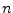
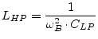
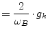

| lower corner frequency of frequency band | (14.26) | |
| upper corner frequency of frequency band | (14.27) | |
| center frequency of frequency band | (14.28) | |
| (14.29) |
One of the most common tasks in microwave technologies is to extract a frequency band from others. Optimized filters exist in order to easily create a filter with an appropriate characteristic. The most popular ones are:
| Name | Property |
| Bessel filter (Thomson filter) | as constant group delay as possible |
| Butterworth filter (power-term filter) | as constant amplitude transfer function as possible |
| Chebychev filter type I | constant ripple in pass band |
| Chebychev filter type II | constant ripple in stop band |
| Cauer filter (elliptical filter) | constant ripple in pass and stop band |
From top to bottom the following properties increase:
The order  of a filter denotes the number of poles of its (voltage) transfer function. It is:
| slope of asymptote dB/decade | (14.11) |
The best possibility to realize a filters in VHF and UHF bands are LC ladder filters. The usual way to synthesize them is to first calculate a low-pass (LP) filter and afterwards transform it into a high-pass (HP), band-pass (BP) or band-stop (BS) filter. To do so, each component must be transformed into another.
In a low-pass filter, there are parallel capacitors and series inductors in alternating order. The other filter classes can be derived from it:
In a high-pass filter:
|  | (14.12) | |
| (14.13) |
In a band-pass filter:
| parallel resonance circuit with | (14.14) | |
| (14.15) | ||
| (14.16) | ||
| series resonance circuit with | (14.17) | |
| (14.18) | ||
| (14.19) |
In a band-stop filter:
| series resonance circuit with | (14.20) | |
| (14.21) | ||
| (14.22) | ||
| parallel resonance circuit with | (14.23) | |
| (14.24) | ||
| (14.25) |
Where
| lower corner frequency of frequency band | (14.26) | |
| upper corner frequency of frequency band | (14.27) | |
| center frequency of frequency band | (14.28) | |
| (14.29) |
The  -th element of an order Butterworth low-pass ladder filter is:
-th element of an order Butterworth low-pass ladder filter is:
| capacitance: |
(14.30) | |||
| inductance: |
(14.31) | |||
| with |
(14.32) |
The order of the Butterworth filter is dependent on the specifications provided by the user. These specifications include the edge frequencies and gains.
The equations for a Chebyshev type I filter are defined recursivly.
With being the passband ripple in decibel, the  -th
element of an order low-pass ladder filter is:
-th
element of an order low-pass ladder filter is:
| capacitance: |
(14.34) | |||
| inductance: |
(14.35) | |||
| with |
 | (14.36) | ||
| (14.37) | ||||
| (14.38) | ||||
| (14.39) | ||||
| (14.40) |
The order of the Chebychev filter is dependent on the specifications provided by the user. The general form of the calculation for the order is the same as for the Butterworth, except that the inverse hyperbolic cosine function is used in place of the common logarithm function.
Because of the nature of the derivation of the inverse Chebychev approxiation function from the standard Chebychev approximation the calculation of the order (14.41) is the same.